GUI Introduction¶
SAE聲學測試時經常使用的軟體為AP、Klippel、LEAP、Comsol等。 同一個產品常常需要在不同軟體上測試並交叉驗證，但彼此的資料卻無法共享，因此想開發一款簡單的桌面應用程式，提供一個資料格式通用的繪圖平台，除了基本的繪圖之外，能做更進一步的資料後處理。
Mainwindow¶
視窗以專案為單位，同時可開啟不同專案的多個視窗。每個專案內可儲存匯入的資料與畫布的個人化設定。 使用者介面分成四大區域: Menubar、Canvas Layout、Data DockWidget、Setting DockWidget。

A. Menubar¶
A-1. File:¶

New Project: 開啟新的空白視窗。
Open Project: 開啟指定的專案檔案(.pkl)。
Save Project: 將專案資料儲存於原先的開啟路徑，若尚未儲存過則會讓使用者設定儲存路徑與專案名稱。
Import File: 觸發匯入檔案的對話視窗，匯入資料檔案於此專案中。

A-2. Help:¶
Document: 開啟應用程式文件視窗。 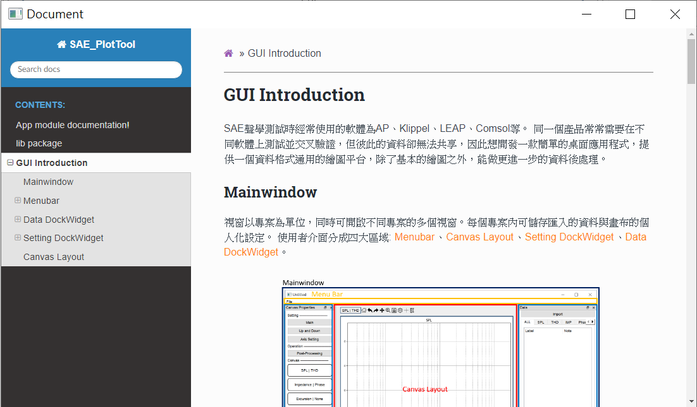
B. Canvas Layout¶
畫布區域，有兩種不同的排版模式Main/Up and Down，可於左方的Setting DockWidget中點選按鈕切換。

應用程式預設有三張畫布，每個畫布有兩個y軸，左邊為主軸，右邊為副軸，共用同一個x軸。 每個y軸有其負責繪製的資料類型，預設的組合為下:
| Canvas (id) | Main axis | Sub axis |
|---|---|---|
| Canvas (0) | SPL | THD |
| Canvas (1) | IMP | Phase |
| Canvas (2) | EXC | None |
| Mode | Canvas set |
|---|---|
| Main | Canvas (0) |
| Up and Down | Canvas (0) + Canvas (1) |
C. Toolbar¶
包含一列tool bar與畫布區域，有兩種不同的排版模式。

C-1. Focusing Canvas¶
Toolbar上的功能只能針對一個特定畫布使用，故一個視窗只有一個目標畫布(Focusing Canvas)，以黑色邊框標示，也可從Toolbar左邊看目前作用的畫布是哪一個，在畫布上雙鍵點擊滑鼠左鍵可以切換目標畫布，如下動圖所示。 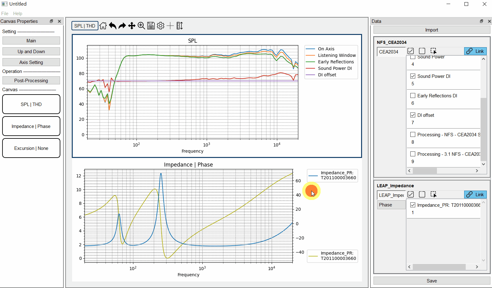
C-2. Graph Properties¶
點選  顯示Graph Properties視窗，共有三個子頁，General、Axis、Curve。
顯示Graph Properties視窗，共有三個子頁，General、Axis、Curve。


Margin: 畫布的邊框留白大小。
Label: 曲線圖例顯示與否，圖例名稱換行的文字數目。
畫布上的三個軸: X軸、主Y軸、副Y軸。
可調整軸的範圍、標題、單位等等。
Curves¶
左方的表格紀錄目前在畫布上的曲線，可編輯曲線的Label名稱、Note註記、Color顏色、LineWidth線寬。
 若檔案的狀態為Link，不同測項的曲線會合併於表格中顯示，曲線的更動也會自動變更至所有測項；若檔案的狀態為Unlink，則不同測項的曲線會分別於表格中顯示，曲線的更動就僅限於單一測項。
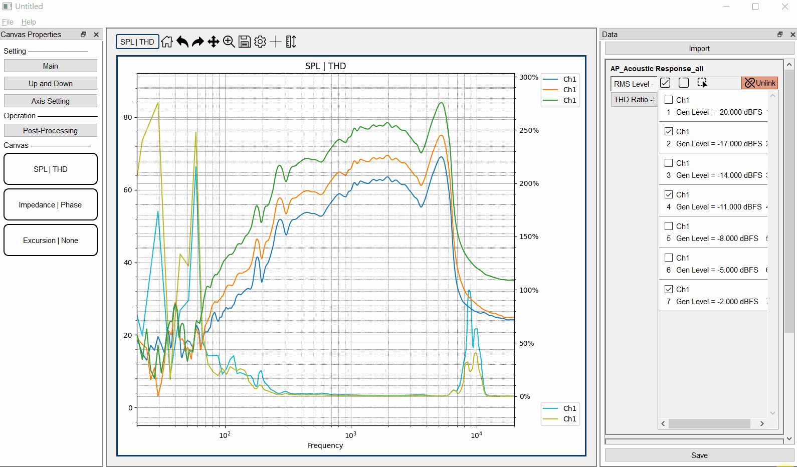
若檔案的狀態為Link，不同測項的曲線會合併於表格中顯示，曲線的更動也會自動變更至所有測項；若檔案的狀態為Unlink，則不同測項的曲線會分別於表格中顯示，曲線的更動就僅限於單一測項。
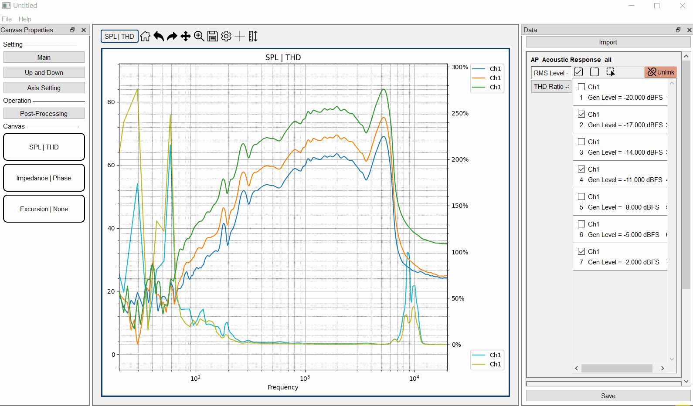
點擊表格可選取曲線，按Tab跳至下一行，按Shift+Tab跳回上一行，會自動巡迴回標格最上方/最下方。
在名稱/註記的儲存格上點擊之後，可直接輸入任意鍵進入編輯名稱/註記的狀態。
按Enter/Tab皆會結束編輯跳至下一行。
可以長按Shift/Curl選取多個曲線，並在右方Edit Style中輸入，會一次套用到被選取的曲線上。
C-3. Draggable Cross lines¶
點選  可顯示一組垂直+水平線，使用滑鼠點擊線可拖拉線至預計標記的點，詳細座標標示於畫布右上角。
可顯示一組垂直+水平線，使用滑鼠點擊線可拖拉線至預計標記的點，詳細座標標示於畫布右上角。
C-4. AutoScale¶
點選  ，視窗會根據目前的資料調整y軸的範圍。
，視窗會根據目前的資料調整y軸的範圍。
D. Data DockWidget¶
預設在右邊的浮動視窗，列出目前匯入的資料。
D-1. Import Data¶
點擊Import觸發匯入檔案的對話視窗，匯入資料檔案於此專案中。

APKLIPPELLEAPCOMSOL: 此應用程式支援四種測試軟體的資料檔案，不同軟體的檔案類型與內部格式皆相異，匯入時請點擊相對應的按鈕。
Delete: 刪除選取的檔案資料，可長按Shift鍵選取多項。
Clear: 清空專案內的檔案資料。
D-2. Files¶
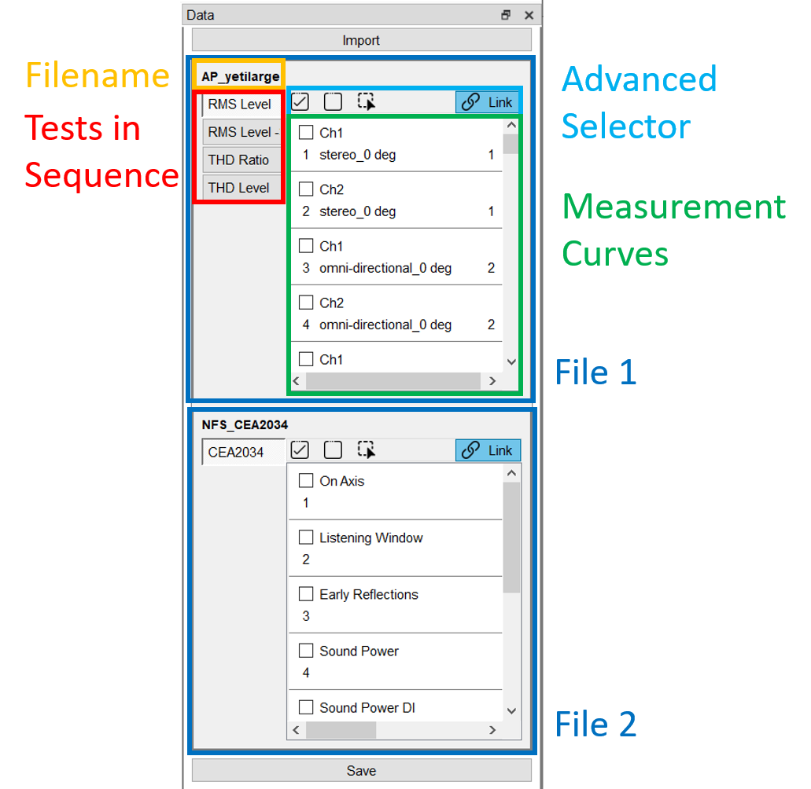 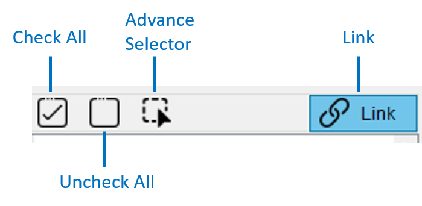
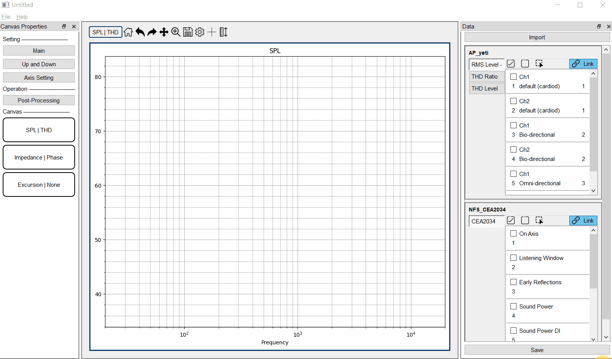
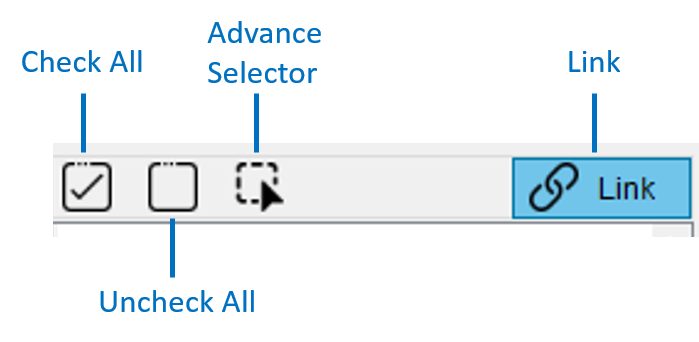
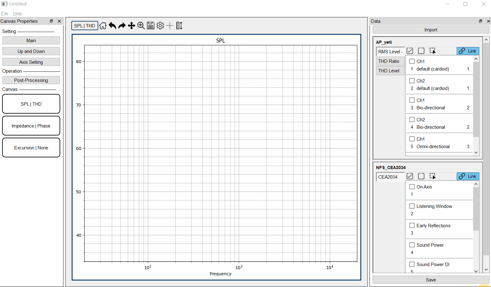
此程式的資料結構與AP類似，每條測試曲線可連結多個測項，若右上角顯示為Link，使用者單一編輯會連動多個測項的資料，若右上角顯示為Unlink，則只會單獨使用當下選取測項的資料。
以動圖中的資料為例，從AP輸出的檔案包括RMS->Level->Smooth, THD Ratio, THD Level等3個測項(test)，共次3測試(measurement)，每個測試有兩個channel輸入，故共有6條曲線(curve)。 若為Link模式，勾選曲線會同時繪製3個測項的資料在相對應的畫布上。若為Unlink模式，因目前選取的測項為RMS->Level->Smooth，故只會繪製RMS->Level->Smooth的資料。 其他編輯也會受到Link/Unlink的模式影響，如編輯曲線的名稱、顏色等。
Advance Selector¶
點選 顯示Advance Selector視窗。

有勾選表示此測項內的資料可以使用、繪製、編輯。
而若是檔案包含重複(如RMS->Level/RMS->Level->Smooth)或是不支援的測項(如Impulse Response、Window等)，可以取消勾選，在後續繪製曲線時會忽略該測項。
 控制File單位方格的顯示大小。
控制File單位方格的顯示大小。
D-3. Save Project¶
點擊Save，將專案資料儲存於原先的開啟路徑，若尚未儲存過則會讓使用者設定儲存路徑與專案名稱。
E. Setting DockWidget¶
預設在左邊的浮動視窗。
E-2. Axis Setting¶
點擊Axis Setting觸發對話窗，可調整畫布的主軸與副軸繪製的資料類別。
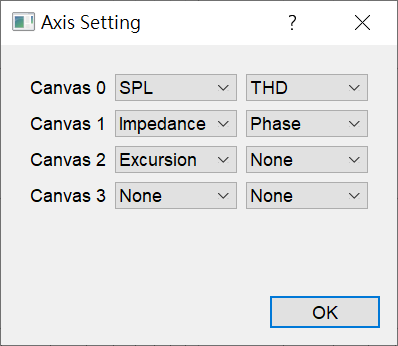若想更動某一畫布的資料類別，則被更動的y軸上的圖形都會被清空。 而因每個資料類別無法同時繪製在兩個y軸上，故單一y軸的更動可能會同時影響兩張畫布。 例如，若想將Canvas 0畫布的主軸改為Impedance，而Impedance原本為Canvas 1的主軸，故會同時清除Canvas 0畫布與Canvas 1畫布的主軸，並將兩軸的資料類別互換。
E-3. Post-Processing¶
點擊Post-Processing觸發資料後處理的對話窗，此對話窗僅適用在目前畫布上的曲線，列於在圖下左方列表中。

 使用者可在左邊選取欲處理的曲線，並於右邊選取後處理的類型，可長按Shift鍵選取多個曲線，但只能一次執行一種後處理函式。
使用者可在左邊選取欲處理的曲線，並於右邊選取後處理的類型，可長按Shift鍵選取多個曲線，但只能一次執行一種後處理函式。
Magnitude Offset 平移:以dB為單位，向上或向下平移。
Align 對齊: 將選取的曲線對齊於特定的(x, y)位置。
E-4. Canvas Objects¶
視窗預設的三種畫布示意圖，使用者可長按滑鼠左鍵拖拉至畫布中央，即可切換畫布。
EX: 原先Main模式下為SPL | THD，可將拖拉Impedance | Phase至畫布中放開，此時Main模式下的畫布就會切換成Impedance | Phase
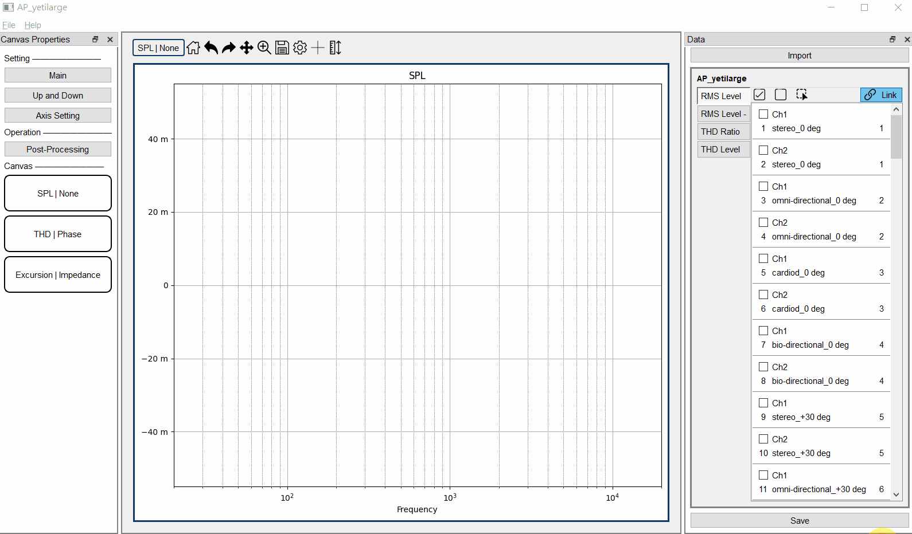